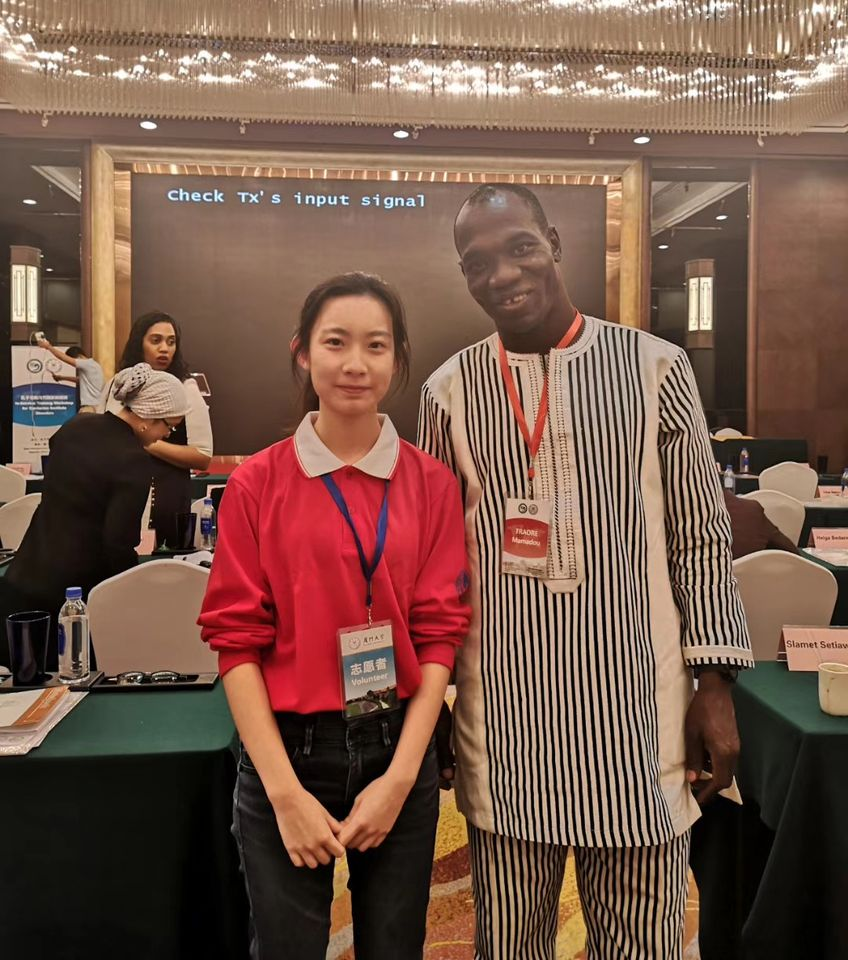
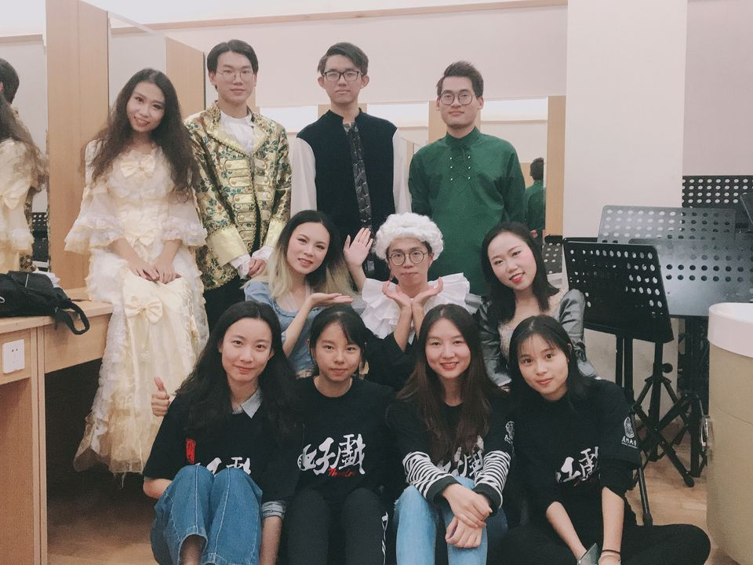
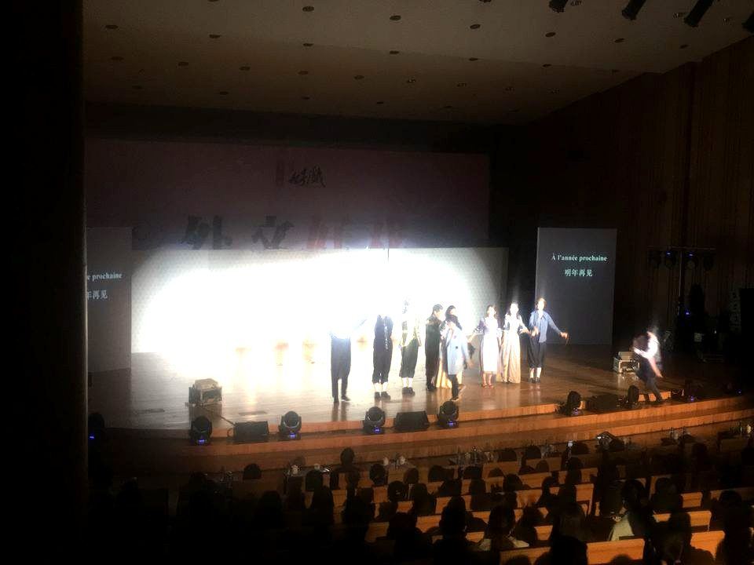
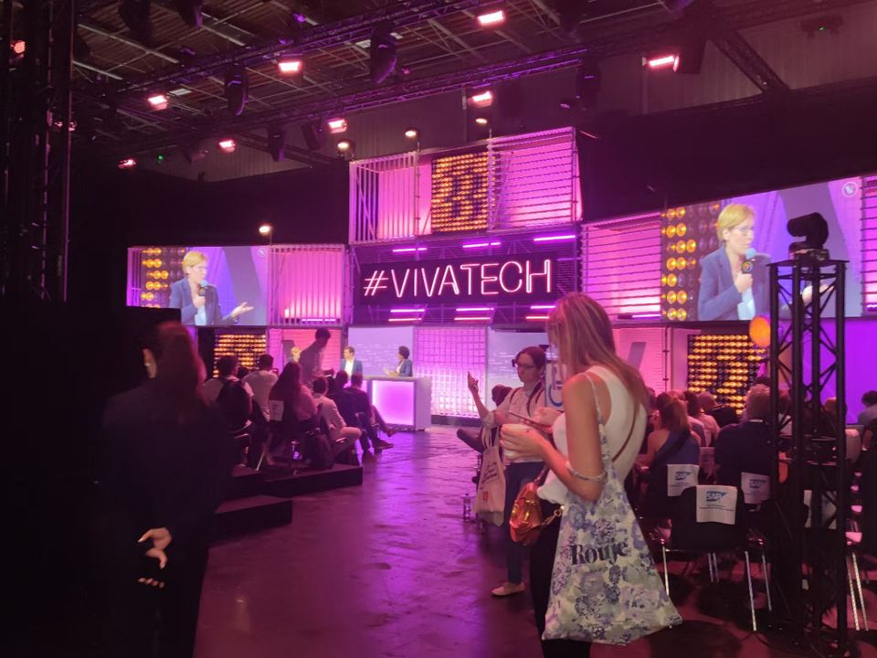
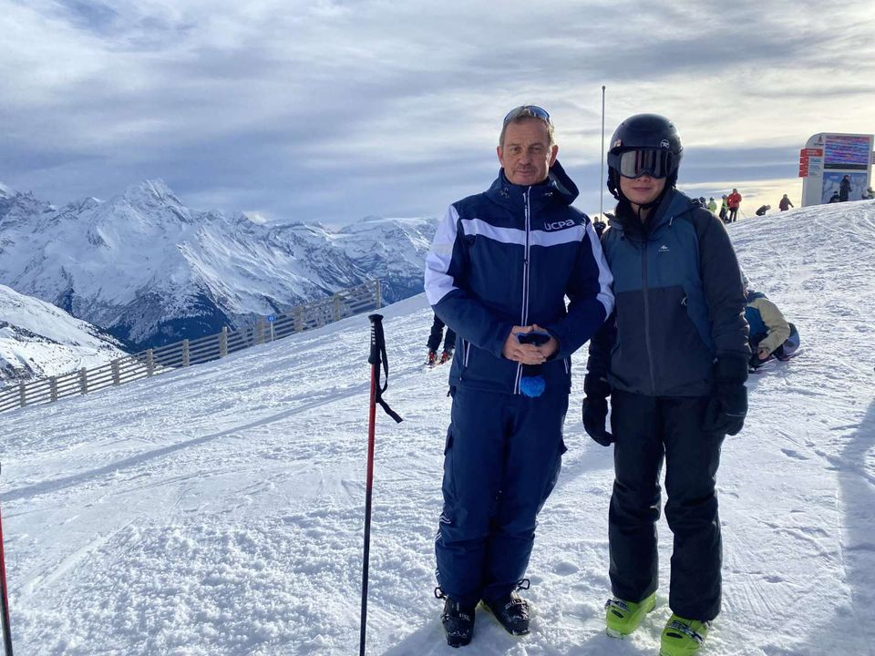
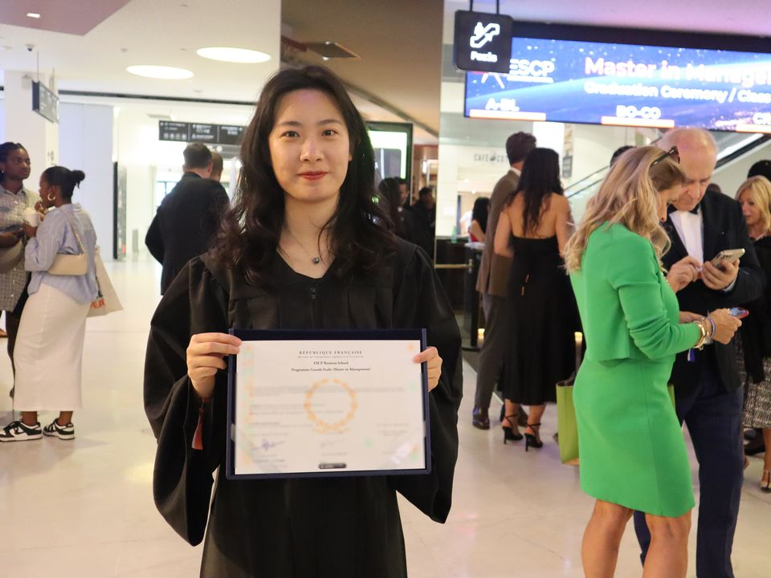
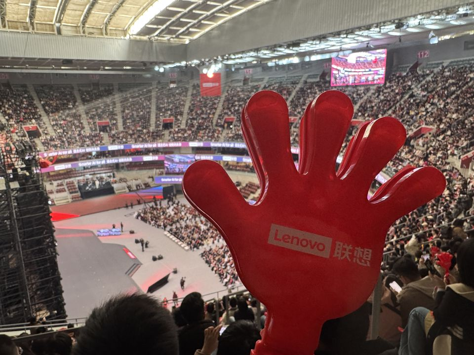
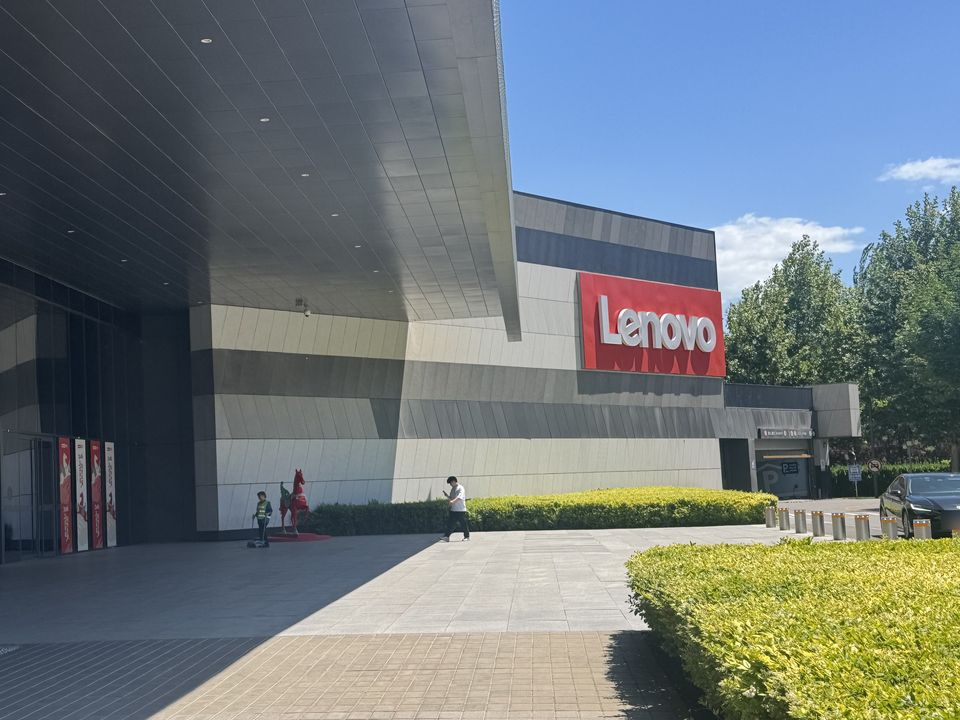
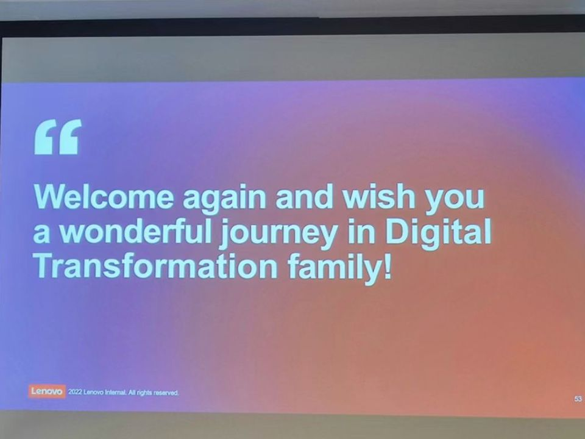
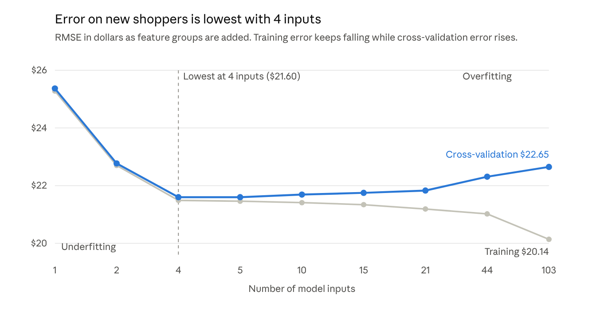

At eighteen, I moved far from home to Xiamen, an island city in southern China, for college. I wanted to study economics. My Gaokao score (China's college entrance exam) put me in French instead. I started from zero, added economics as a second major, and slowly fell for the language. My favorite college memory is assistant directing The Marriage of Figaro with twenty classmates. We did everything ourselves, and almost 200 people came to watch.

Volunteering at the Confucius Institute

Backstage with the cast of The Marriage of Figaro

Curtain call
French took me to Paris, where I studied at ESCP. During breaks I interned at Kingsoft, the company behind WPS Office, and at Source Code Capital, a VC firm in Beijing. There I kept meeting founders with great ideas who were still figuring out how to build their teams and run the day-to-day. That's when I started caring as much about how companies run as about what they build.

VivaTech, Europe's largest tech event

A week of skiing in the French Alps

Graduating from ESCP Business School
At Lenovo, I joined the Digital Transformation Office. Soon after I started, the outside developer behind our Power BI reporting left, and no one fully understood the system. I took it on and rebuilt it piece by piece. Then I went a step further and replaced the monthly slide decks for 8 leaders with automated dashboards. Within a year I was promoted, and our team was named best team 3 years in a row. Along the way, I learned that digital transformation is rarely about the tool and the technology. The real work is rethinking how processes flow and getting people aligned around them.

Lenovo's fiscal-year kickoff

Lenovo headquarters, Beijing

Day1 into the Digital Transformation family
That lesson brought me to Seattle, where I'm now pursuing an MS in Business Analytics at the University of Washington Foster School of Business. I'm learning to use machine learning and AI, to help businesses make better decisions, and to be the person who understands both what these tools can do and what the business actually needs.
Our Digital Transformation project portfolio was managed in Anaplan, which was hitting its limits and costing a lot in licenses. As the business-side owner of the tool, I led the business side of the move to Microsoft Project Online (MSPO), from requirements to reporting, and made the process simpler along the way.
My roleBusiness-side system owner and key user
TeamDT business, IT and Finance
TimelineUnder three months
ToolsAnaplan, MSPO, Power BI
~$300Kyearly license cost saved once Anaplan was retired
31 → 20steps to set up a program, about 35% fewer
200+programs moved across 9 business groups
2 → 1tools for program and project management
The problem
The Anaplan model was running out of room and its license was about to expire, which left a short window to move. Years of staff turnover had also left the model's logic poorly documented, so few people knew how it worked. As the person who maintained the model and trained its users, I became the bridge between the old system and the new one.
What I did
Align requirements
Gathered requirements and mapped the old system
Collected requirements from PMs, program creators across 9 business groups, and finance
Documented the fields, logic and workflows of four Anaplan modules
Turned both into a requirements package that IT used to design and build MSPO
Simplify the process
Redesigned program setup
Removed the program resource demand input and the benefit split by BU and GEO, which took PMs time but few people used
Added a priority field that portfolio reviews needed
Before · 31
After · 20
Automate approvals
Designed and configured approval routing
Mapped every funding bucket to its finance approver
Set up the mapping so new programs carry their approver into MSPO automatically
BeforeEvery request went to one central finance team, which had to find the right approver by hand.
AfterEach program's funding bucket names its approver, so requests go straight to the right person.
Rebuild reporting
Rebuilt the data flow end to end
Mapped Anaplan fields to their new MSPO fields
Worked with the data team to switch the data platform's source from Anaplan to MSPO
Updated the data paths behind the leadership Power BI dashboard and checked the numbers end to end
How the system fits together
Before
Anaplanprograms and budgets
MSPOprojects
→
Data platform
→
Power BIleadership dashboard
After
MSPOprograms, projects and approvals in one place
→
UpdatedData platformnew source and field mapping
→
UpdatedPower BIdashboard repointed to new data
Every step in the chain changed, and I worked on each one, from the source system to the dashboard.
Outcome
I handed over my work when I left for my MSBA, and the new system went live soon after. Anaplan has been shut down, and the team now works in one tool instead of two.
What I took away
When the people who built a system are gone, clear documentation is the most valuable thing you can deliver.
Digital transformation is less about upgrading the system and more about rethinking the business process behind it.
Predicting Checkout Spend to Target Free Shipping Case study · UW Foster MSBA
I built a regression model that predicts how much each shopper will spend at checkout, so an online retailer can offer free shipping only to shoppers likely to spend $150 or more. My recommended Lasso model cut the typical prediction error from $42 to about $22, using only 7 of 103 possible inputs.
DecisionWho gets free shipping, which costs $8 per order
Data1,500 checkout sessions, 15 candidate features
MethodsOLS, cross-validation, Ridge, Lasso
ToolsPython, pandas, scikit-learn
$42 → $22typical prediction error per shopper
7 of 103inputs kept by the final model
72%of offers went to shoppers who really spent $150+
$104wasted-offer cost, lowest of all models tested
OmniShop wanted to spend its free-shipping budget only on shoppers who would spend at least $150. Finance assumed every shopper spends the average of about $113, a guess that is off by about $42 for a typical shopper and cannot tell a $60 shopper from a $180 one. I turned this into a regression problem: predict each shopper's spend in dollars, then use the prediction to decide who gets the offer.
What I did
Set the bar
Started from the simplest guess
Held back 30% of sessions as a test set and kept it untouched until the final check
Used the average spend as a baseline, then fit OLS on the 4 features the team trusted most
Check the errors
Found 8 orders skewing every prediction
A residual plot showed 8 VIP orders of $1,000+ pulling predictions up by about $9
Since the VIP team already serves these shoppers, I modeled standard shoppers only, which halved the error and lifted R² from 0.10 to 0.73
Avoid overfitting
Showed that more features made it worse
Added all 15 features one group at a time and compared training error with 5-fold cross-validation
Error on new shoppers was lowest at 4 inputs and rose as noise like region and session hour came in

Training error kept falling, but error on new shoppers bottomed out at 4 inputs.
Regularize
Let Lasso pick the real drivers
Tuned Ridge and Lasso inside a pipeline so scaling and encoding never leaked test data
Lasso zeroed out 96 of 103 inputs and kept the same top drivers the team trusted: past order value, recommended items, pages viewed and discount
It also dropped session length, which plain OLS gave a confusing negative weight because it moves with pages viewed
Test in dollars
Turned predictions into a business decision
Applied each model to the $150 rule on 448 test shoppers, 54 of whom really spent $150+, and counted wasted offers, missed high spenders and cost
Model
Offers
Wasted
Missed
Wasted cost
Lasso
47
13
20
$104
Full OLS
52
15
17
$120
Trained with VIP orders
60
21
15
$168
Recommendation
I recommended Lasso. It is nearly as accurate as the best model, uses only 7 inputs a revenue leader can understand, and wasted the least money. The trade-off is that it missed 20 of 54 high spenders, so I proposed logging every shopper after launch, tracking near-misses just under $150, and running a small holdout group to measure whether free shipping actually raises spend.
What I took away
A better score on training data can mean a worse model on new customers.
Looking at the errors, not just the score, found the 8 orders behind most of the problem.
Reporting results in dollars made the model choice a business decision, not only a technical one.
From the BUS AN 517 (ML/AI Methods and Applications) case study in the UW Foster MSBA. OmniShop is fictional and the data is synthetic; the analysis and recommendation are my own.